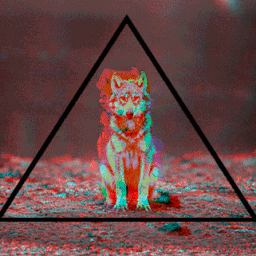

Lox Game Studios
Video Game DeveloperAbout Us
Services

Security Bot
The easiest way to get rid of tricky phishing websites.

Advertising Bot
The easiest way to start advertising your Discord server.

Domain Analyzer
A feature-rich domain analyzer to protect your customers against malicious and phishing websites.
Lox Servers
The best and cheap Linux and Windows servers for your Discord bots located at the United States of America to lower the latency as much as possible.
Lox Game Servers
Contact us, and run your free game server for one month. Up to 12 location options including many Europe and America servers.
Self-promotions
Let us help you advertise your services or Discord servers.
Testimonials
We were able to see first hand why it's needed. We muddled through, but will be even better prepared next time someone decides to throw a tantrum in our server.
Pevinsghost#4692Security Bot - Premium Customer- 
The Security Bot is really useful in my server sincerely cause it helps to stop scammers or mostly everything. The most useful Security Bot that's better than all of the others out there. Everyone needs to have it, to stop people that only wants to mess things up.
WolfyLox Game Studios Security Bot stays in front of my Discord server against scammers and suspicious Discord users. This bot is amazing and must be in every Discord server.
Lina yunSecurity Bot - CustomerWe were spending time on kicking advertisers, or spammers, or people that are bothering the others. But all of them just stopped since we started using the Security bot, that's absolutely wonderful. This is the most amazing Security bot I've ever seen in Discord.
Tinky#9543Security Bot - Customer
Latest News
Tuesday, May 28, 2019Security Bot
We have added 366 new domains to our Malicious Domains Database due to their scamming acts and containing malicious contents...
We have added 366 new domains to our Malicious Domains Database due to their scamming acts and containing malicious contents.
The Rich Domain Info feature for Security Premium will now have more information about the site and will attempt to analyze any submitted websites.
Security Premium users will now be able to get information about the people who have joined their servers. By using the setnewmemberinfochannel command that is at the bottom of the Advanced category, you can change the channel you want to get information about the Discord users joining the server just by mentioning or naming it. After this step, you will be able to get some information about people joining your server, including but not limited to:
Their profile photos,
The date of the account creation, and;
Which servers they have been on before.Wednesday, May 22, 2019Security/Advertising Bot
Added 6 Discord servers including but not limited to servers that are scamming Discord users by collecting payment information...
Suspicious Domains Database: Added 14 suspicious domains.
Blacklisted Users: Added 3 Discord users.
Blacklisted Servers: Added 6 Discord servers including but not limited to servers that are scamming Discord users by collecting payment information.
Spam Detection: Some improvements for the Spam Detection feature have been applied.
Welcomer Renderer: Some improvements for the renderer have been applied.
Xeavy Improvements
Fixed Response Issues: The bot was not answering due to a client connection issue.
Fixed Queue Problems: The bot was canceling the requests that are on the queue after a certain period of time.
Advertising Bot
We are currently working on this bot further to make it better and stable. It'll be released as soon as we complete the stabilized and optimized Advertisement Panel renderer. Just so you know, the project is ready and is only waiting for some improvements.Monday, April 06, 2019Notarged 2
Let's see what we have done in the last 2 weeks...
Hi everyone. So sorry for the delay of updates, but we are currently working on different projects. But that still does not mean we never work on Notarged 2, we do. Let's see what we have done in the last 2 weeks.
Bug Fixes
We are using Bass to play OGG sound files on the main menu and loading screens.
Fixed resuming issues: It was not playing the song when you stop and replay.
Fixed wave system: When you kill two soldiers, it was subtracting 1 soldier from the total. (Computer is broken, not my fault)
News
Custom loading song controller: Once you modify GameInfo.txt you will be able to play your own songs with different formats (MP3 format is not supported yet).
Main Menu buttons: Just made them a little bit better.
Multithreading: The game now works multithreaded.
New map: I will explain that map soon with images or videos of that map.
Launcher - Browsing news: You will be able to browse news on our game launcher (No cake recipe).
Launcher - Mod Launcher: Design of our mod launcher will completely be changed.
Launcher - Settings: You will be able to customize some settings of Notarged 2 before opening the game.
I have used Underhell's prologue map in the first Notarged, I have no plan for a new map so, I am thinking of redesigning that city and adapting it to Notarged 2.
Let us know your thoughts.


Contact Us
Any question? Reach out to us via Discord and we will get back to you shortly.